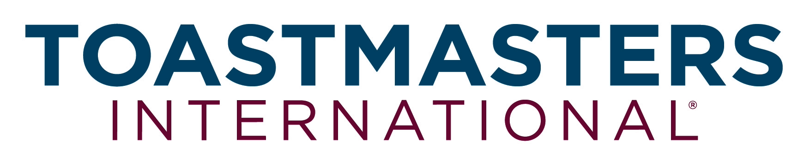
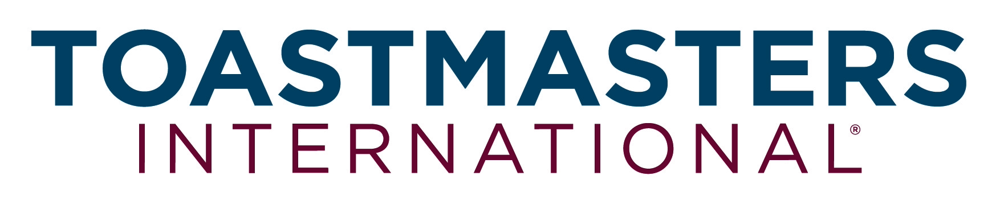
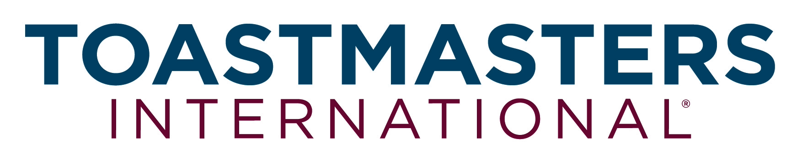
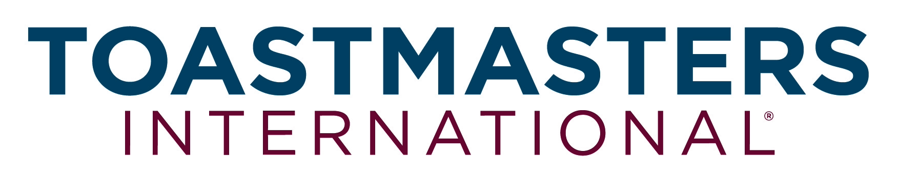

Where culinary passion meets public speaking excellence
Foodies Toastmasters is a District 106 club for food lovers, professionals, and enthusiasts who want to improve their communication and leadership skills in a delicious environment.
One social gathering at a local eatery and one formal club meeting
Join us in-person or via Zoom from anywhere in the world
Chef de Cuisine, Maître D', Sous Chef, and more!